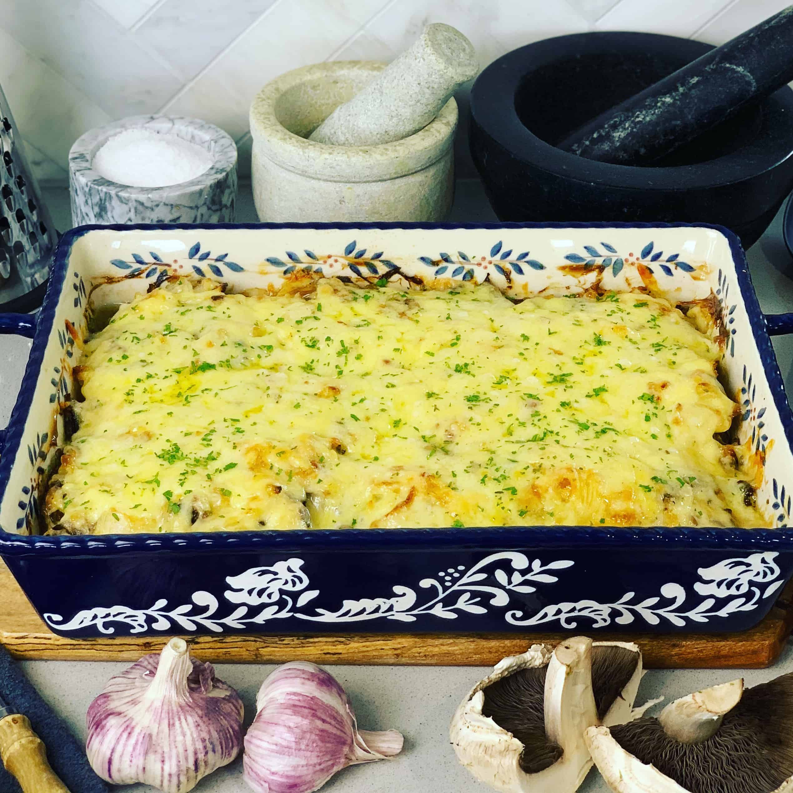

French-style Meat

Description
Recipe of French-style Meat or Veal-Orloff, as it's called originally, has its roots in the 18th century, when it was created by the French ambassador to Russia. Sophisticated dish with simple recipe rapidly gained popularity among many Russians and became a traditional meal for the New Year or any special occasions. Tender meat with vegetables baked under a toasty cheese blanket will definitely impresss your guests, while requiring neither a lot of time nor much cooking experience.
Cooking time: ~1hr 30min
Ingredients
- Chicken or beef fillet: 600g
- Onions: 1-2
- Potatoes: 4-5
- Carrots: 1
- Tomatoes: 1-2
- Cheese: 300g
- Mayonaise
- Salt
- Black pepper
Steps
Preparing the Ingredients
- Cut the onion in quarter-circles.
- Cut the meat into stripes and beat it a little bit.
- Mix the meat with onions, salt, pepper, and mayo.
- Put the meat into fridge for several hours. This way it will marinate a bit and taste better. However, if you don't have time you may cook it straight away, it will still be delicious.
- Peel and carefully wash carrots and potatoes.
- Cut the potatoes into thin quaters-circles.
- Cut the carrot into thin semi-circles.
- Wash the tomatoes and cut them into circles or half-circles.
Laying out Layers
- Lube a tray for baking with some oil.
- Spread the potato on it.
- Spread meat with onions and spices.
- Add the carrot.
- Add tomatoes.
- Spread some mayonaise on top. You can use silicon brush to spread it more evenly.
Baking
- Put the meat into an oven with 220C for 20 minutes.
- Add a little bit of water to the tray and wait for more 10 minutes.
- Adjust the tempreature to 180-190C and wait 20-30 minutes. Make sure the water keeps boiling.
- Check the potatoes with a knife. If it's soft enough, it's time to add the cheese. Sprinkle and evenly spread the grated cheese on top.
- Wait until the cheese gets a bit toasty. It usually takes around 10 minutes.
- Voila! French-style Meat is ready!